AgileCoachIQ is your always-available AI coaching partner for Scrum, SAFe, Kanban, and beyond — built on Claude, trained on the frameworks that matter.
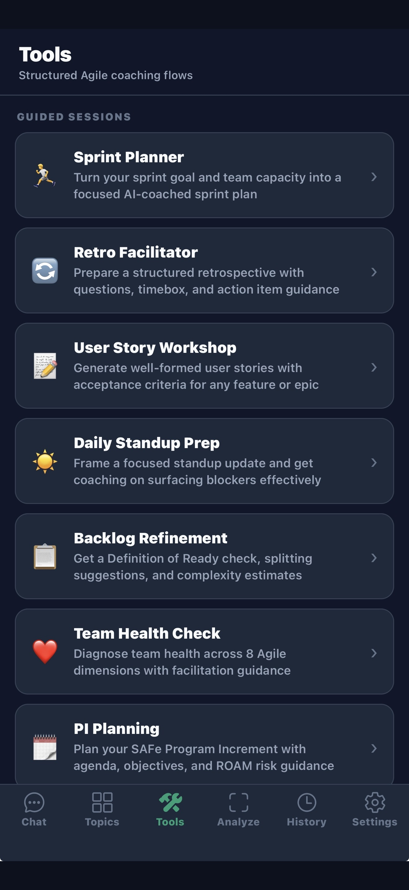
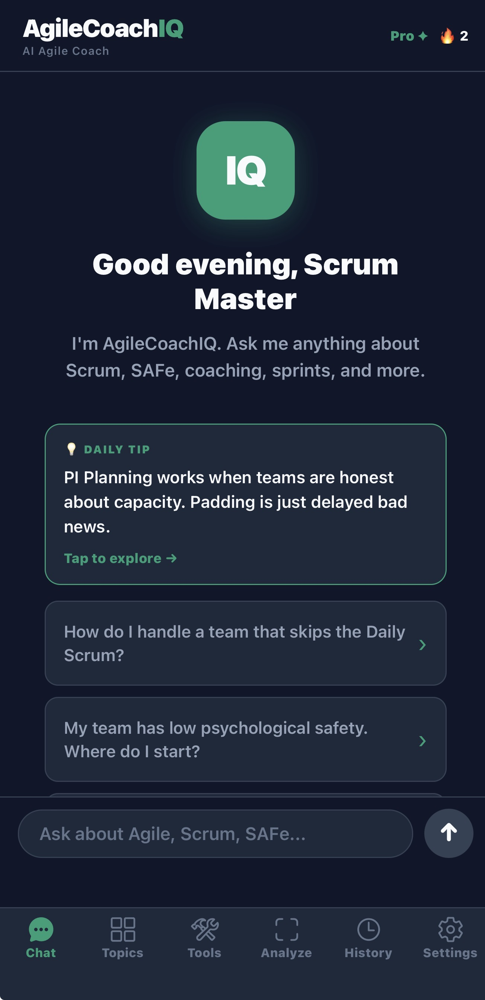
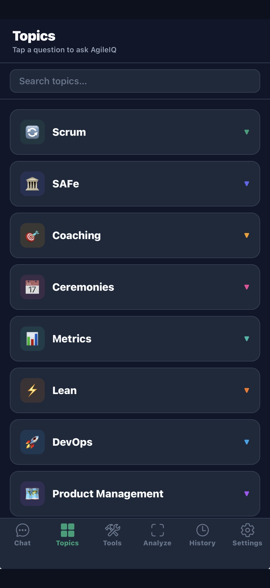
Ask anything about Agile and get practitioner-grade coaching — not a Wikipedia summary. AgileCoachIQ knows you're a professional and answers accordingly. Structured. Direct. Actionable.
"Skipping the Daily Scrum is a symptom, not the root cause. Before fixing the ritual, diagnose why they're skipping it — Sprint Goal is weak or absent, it's become a status report, or there's a psychological safety issue..."
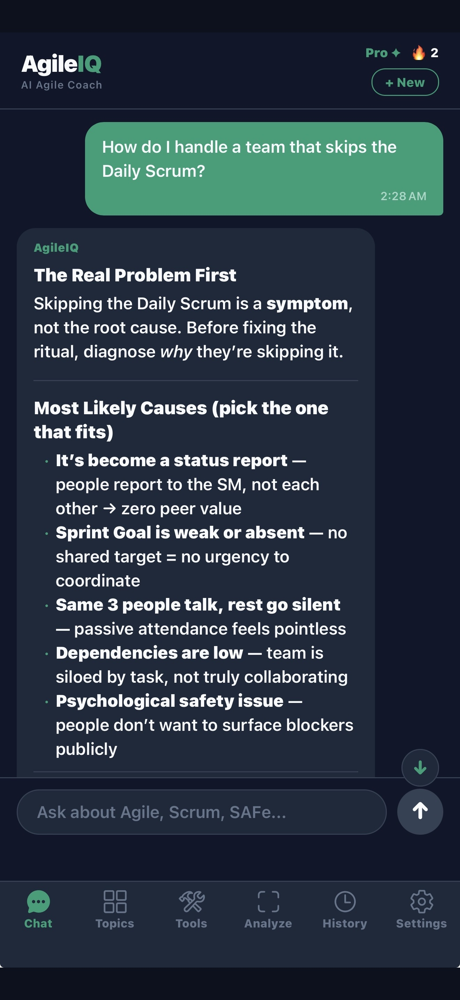
Every tool walks you through the right inputs, then generates a tailored coaching output for your specific situation. No prompting skill required — just fill in what you know and tap Go.
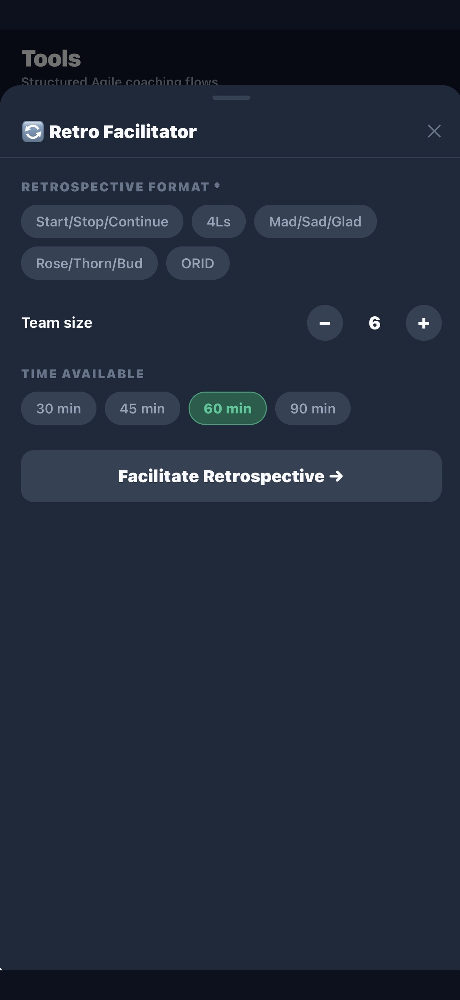
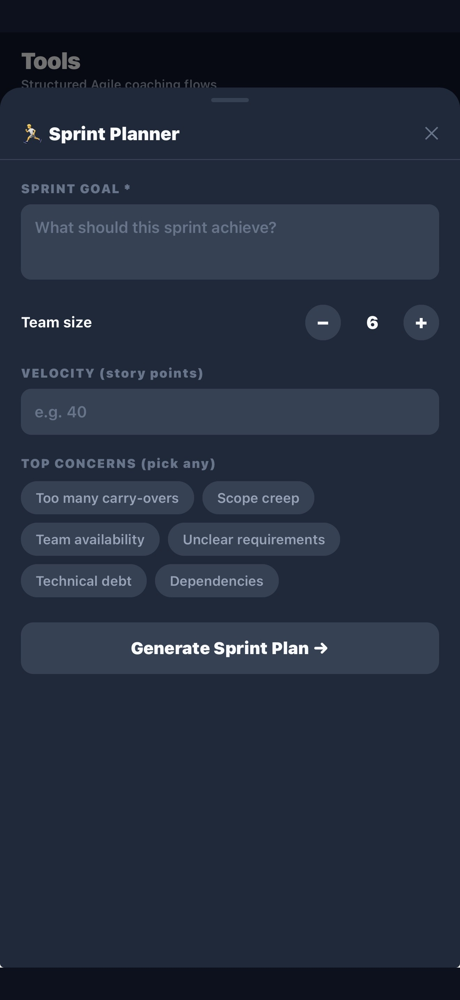
Upload a screenshot or take a photo of your Jira sprint board, Kanban board, roadmap, or retro board. AgileCoachIQ analyzes what it sees and gives you specific, visual coaching — WIP violations, flow issues, risk signals, prioritization feedback.
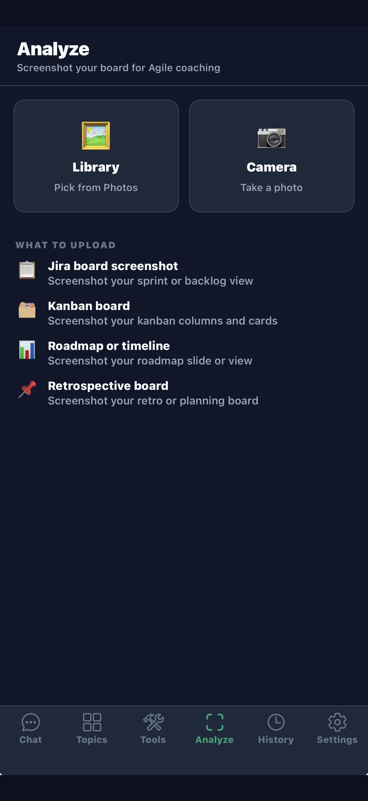
9 curated topic areas, each with 5–7 expert questions that launch directly into a coaching conversation. Tap a question and you're coaching — no typing required.
Set your role, Agile experience level, primary framework, and coaching context once. AgileCoachIQ uses that profile on every question — a beginner Scrum Master gets different guidance than an expert Agile Coach running a SAFe transformation.
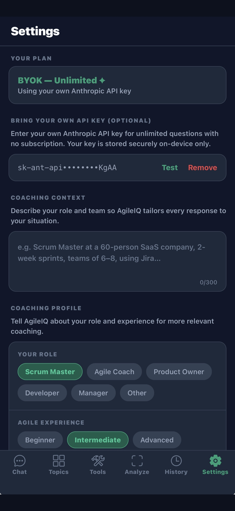
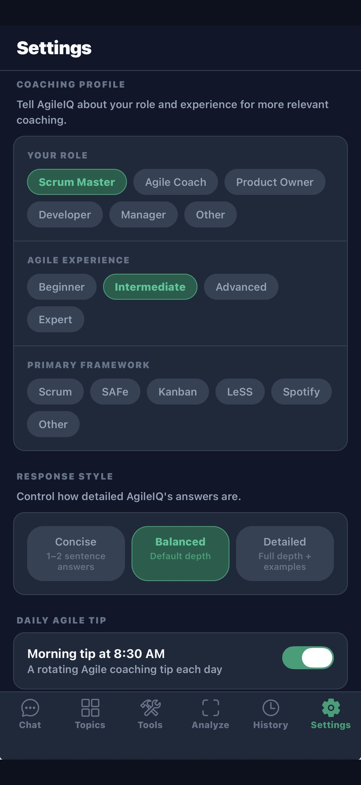
Every conversation is automatically saved and grouped by date. Search across all your past coaching sessions instantly. Save standout responses to Favorites. Capture quick ideas in Sprint Notes — your running coaching journal.
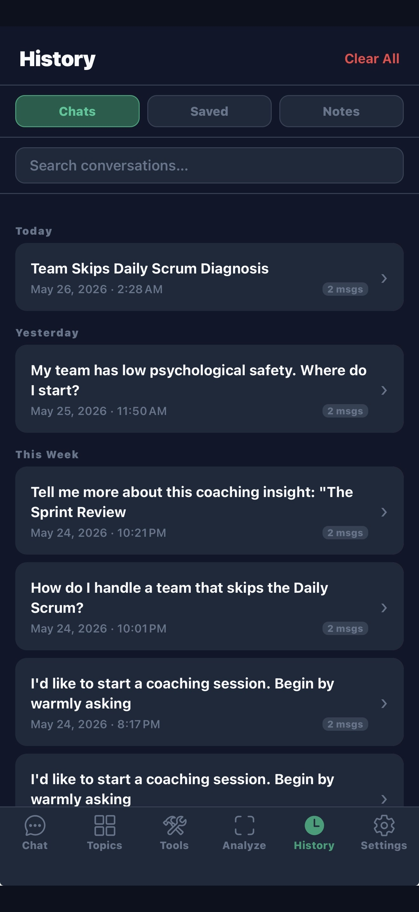
Each tool asks the right questions, then generates output tailored to your context. No generic templates — real coaching output for your specific sprint, team, and situation.
Enter your sprint goal, team size, velocity, and top concerns. Get a structured sprint plan with capacity guidance and risk flags.
Choose your format (Start/Stop/Continue, 4Ls, Mad/Sad/Glad, Rose/Thorn/Bud, ORID), team size, and time. Get a full facilitation guide with questions and timebox breakdown.
Describe your feature or epic, add a persona, choose how many stories. Get well-formed user stories with acceptance criteria, ready for refinement.
Log what you completed, what you're doing today, and any blockers. Get a coached standup update that surfaces impediments in the right way.
Run your backlog items through a Definition of Ready check, get splitting suggestions for oversized stories, and story complexity estimates.
Diagnose team health across 8 Agile dimensions. Get facilitation guidance and specific interventions based on what you report.
Plan your SAFe Program Increment with AI-structured objectives, capacity input, and ROAM risk table guidance for dependencies and blockers.
Define compelling Objectives and measurable Key Results with AI guidance. Learn what makes an OKR strong vs. weak as you build.
Score your backlog using RICE, MoSCoW, Kano, or weighted frameworks. Get a ranked list with prioritization rationale.
Generate clear, outcome-led sprint or program updates for any audience — from a tech team to a C-suite. Automatically adjusts tone and detail.
Shape a product roadmap narrative with outcome themes and sequencing logic. Turn your backlog into a story stakeholders can follow.
Paste in raw user feedback, interview notes, or survey data. Get extracted patterns, key insights, and recommended product actions.
Practice questions with explanations, concept reviews on must-know topics, weak-spot quizzes, and full 10-question mock exams. Covers PSM I · PSM II · PSPO I · SAFe Agilist · CSM · CSPO.
Built-in timebox for every Scrum event: Daily Standup (15m), Sprint Planning (2h), Sprint Review (1h), Retrospective (1h), Refinement (1.5h), PI Planning (8h). Or set a custom duration.
The AI coaches you the way a real Agile coach would — by asking questions first. It surfaces assumptions, reframes the problem, then guides you through it. Use it on your hardest current challenge.
Upload a screenshot or take a photo of any Agile board — Jira, Trello, Kanban, roadmap, or retro board — and get immediate AI coaching feedback on what you see.
AgileCoachIQ personalizes every response to your role and experience level. The same question gets a different answer for a beginner SM vs. an enterprise Agile coach.
Handle team dysfunction, run better ceremonies, coach without giving the answer, remove impediments that aren't yours to own. AgileCoachIQ has seen every team anti-pattern and knows what actually works.
Write sharper acceptance criteria, build a compelling Product Goal, say no to stakeholders without damaging trust, and prioritize a backlog that reflects real product strategy — not just the loudest voice.
Shift between coaching stances, design interventions for resistant teams, measure your impact, and scale what's working across a program. Think with a peer who knows the frameworks as well as you do.
Understand the Definition of Done, manage technical debt without ignoring features, estimate with confidence, and participate in Scrum as an owner — not just someone attending ceremonies.
Support self-organizing teams without micromanaging, understand what Agile metrics actually mean, and set stakeholder expectations in a way that builds trust instead of pressure.
AgileCoachIQ generates practice questions, concept reviews, weak-spot quizzes, and full 10-question mock exams — all grounded in the actual exam content for each credential.
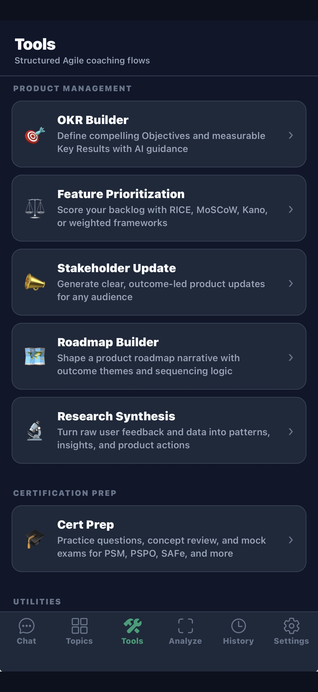
Every feature is available on the free tier. Pro removes the daily limit.
Have an Anthropic API key? Enter it in Settings for unlimited questions at your own API cost — no subscription needed. Your key is stored securely on-device and never touches our servers.
Free to download. No account required. Start asking questions in under 60 seconds.
Download on the App Store